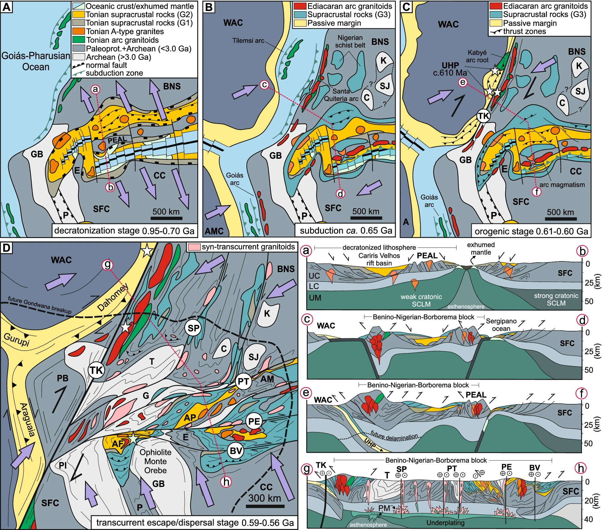

Decratonization by Rifting followd by Orogeny and transcurrent dispersal of old terranes in NE Brazil: A common feature of Gondwana Amalgation?

Resumo em Português
A dispersão e deformação de fragmentos cratônicos dentro de orógenos requer o enfraquecimento das margens cratônicas em um processo de descratonização. A Província Borborema orogênica, no NE do Brasil, é um dos vários orógenos Brasilianos/Pan-Africanos do Neoproterozoico tardio que levaram à amalgamação do Gondwana. Uma característica comum desses orógenos é que um período de extensão e abertura de oceanos estreitos precedeu a inversão e a colisão. No caso da Província Borborema, o Cráton São Francisco foi afastado de sua outra metade, o Escudo Benino-Nigeriano, durante um evento de extensão intermitente entre 1,0–0,92 e 0,9–0,82 Ga. Isso foi seguido pela inversão de uma bacia oceânica embrionária e confinada em ~0,60 Ga e por orogenia transpressional a partir de ~0,59 Ga.Investigamos a região de fronteira entre o norte do Cráton São Francisco e a Província Borborema e demonstramos como os blocos cratônicos tornaram-se fisicamente envolvidos na orogenia. Combinando esses resultados com uma ampla compilação de idades U-Pb e modelos isotópicos de Nd, mostramos que a Província Borborema consiste em até 65% de rochas antigas intensamente cisalhadas afiliadas ao Cráton São Francisco/Benino-Nigeriano, separadas por grandes zonas de cisalhamento transcorrente, com apenas ~15% de adição de material juvenil durante a orogenia Neoproterozoica. Essa evolução se repete em vários orógenos Brasilianos/Pan-Africanos, com variações locais significativas, indicando que a extensão enfraqueceu regiões cratônicas em um processo de descratonização que as preparou para o envolvimento nas orogêneses que levaram à amalgamação do Gondwana.